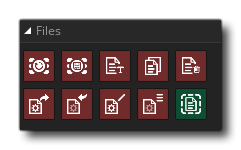

Die Dateiaktionen behandeln zwei verschiedene Dateitypen - Pufferdateien und Ini-Dateien - und verfügen über bestimmte allgemeine Dateiaktionen zum Umbenennen oder Kopieren vorhandener Dateien. Pufferdateien werden erstellt, indem die Daten aus einem Puffer, den Sie zuvor erstellt haben, gespeichert werden, und diese Daten können später jederzeit wieder in einen Puffer geladen werden. Weitere Informationen zu Puffern finden Sie hier: Pufferaktionen.
Ini-Dateien sind kleine, leichte Dateien, die mit den meisten Plattformen kompatibel sind. Sie sind ideal für die Speicherung kleiner Informationen wie Schnittstellenpräferenzen, lokale Highscores, Füllstandsdaten usw. und sind sehr einfach zu benutzen. Ini-Dateien müssen nicht zuvor erstellt worden sein, um diese Aktionen zu verwenden, und Sie können aus einer nicht vorhandenen Ini-Datei lesen, und Sie erhalten einfach eine default Rückgabewert (den Sie angeben), aber wir empfehlen, dass Sie mindestens eine "Basis" -Ini-Datei zum Öffnen und Ändern erstellen, bevor Sie die Aktionen verwenden. Diese Basis-INI-Datei kann durch einfaches Aufrufen der Open Ini File- Aktion gefolgt von der Close Ini-Datei erstellt werden, da das Schließen der Datei sie auf den Datenträger schreibt oder Sie einen in die Included Files des Ressourcenbaums aufnehmen können. Wenn Sie eine in der Ressourcenstruktur enthaltene Datei als Basis-Ini verwenden, sollten Sie auch den Abschnitt des Handbuchs zur Funktionsweise des Dateisystems lesen.
Zum Arbeiten mit Dateien existieren folgende Aktionen:
| Ladepuffer | |
 | Puffer speichern |
| Datei umbenennen | |
 | Datei kopieren |
| Datei löschen | |
 | Öffnen Sie die Ini-Datei |
 | Schließen Sie die Ini-Datei |
 | In Ini-Datei schreiben |
| Lesen Sie die Ini-Datei | |
 | Wenn Datei vorhanden ist |